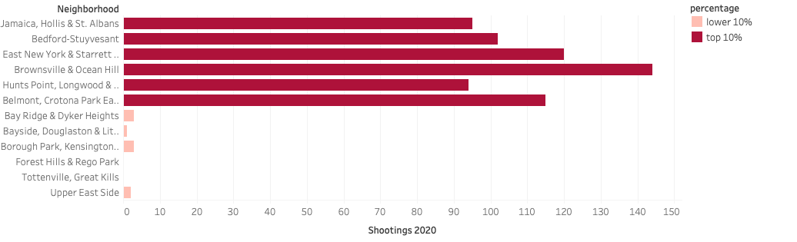
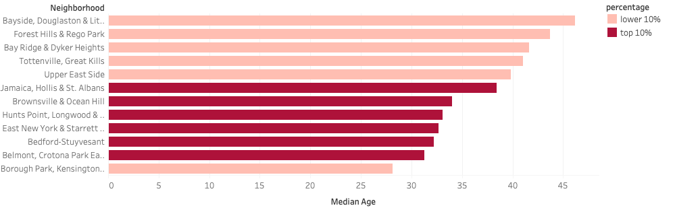
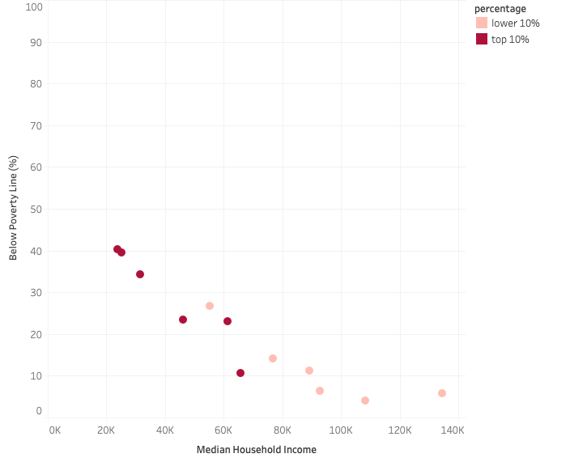

To look into NYC shootings more closely, we used Public Use Microdata Areas (PUMA), to segment off the neighborhoods. The breakdown and names of each PUMA can be seen in the picture below.

If you are from the United States, when you hear the phrase, “Gun-related violence” you probably don’t think much of it. Not because you don’t think there is anything wrong with it, but because it has become such a common thing to hear about happening here that it just doesn’t surprise you anymore. Gun violence and gun control have become a heated debate in the United States between those in power and also your average gun enthusiast and anti-gun person. While we sit and wait for policy to change on gun laws, innocent people are being killed by the thousands every year because of these weapons of war that we have allowed almost anyone to own. Mass shootings have become a weekly thing and it doesn’t look like they are going to slow down anytime soon unless we find a way to make a change. My question is if gun enthusiasts refuse to let us change our gun laws, are there any other ways we can slow the rate of these gun-related crimes from happening?
To look into NYC shootings more closely, we used Public Use Microdata Areas (PUMA), to segment off the neighborhoods. The breakdown and names of each PUMA can be seen in the picture below.
Using data from New York City Open Data, we were able to find all of the gun-related incidents during 2020 in NYC and map them using their coordinates. Each unique incident is displayed as a red dot on the map. There were a total of 1942 unique incidents. The next goal was to find out how many incidents were in each PUMA segment. To do this, we processed the data in QGIS, which enabled us to count all of the points in each polygon (PUMA).

Once the points in each polygon were counted, we transferred that new dataset over to ArcGIS to create the interactive map below.
To display the data in ArcGIS, we created a choropleth map that split the data into 10 quantile groups. By doing this, we can find which PUMAs are in the top 10% of the gun-related incidents and which are in the bottom 10%. In the top 10%, the PUMAs are:
As seen in the chart below, there is clearly a huge difference in shootings incidents between the groups with the most shootings in a PUMA in the top 10% group being 144 and the most shootings in a PUMA in the lower 10% group being tied at 3.
Looking at the median age of the PUMAs, it is easier to see a correlation. Excluding the Borough Park, Kensington & Ocean Parkway PUMA, the Neighborhoods in the lower 10% have a higher median age than those in the top 10%.
When looking at education level between the PUMAs, both groups had a decent high school or higher education rate, but the lower 10% group was consistently higher (average of 79% for the top 10% group and an average of 89% for the lower 10% group). When it comes to, bachelor's degree or higher education level, it isn't even close. The upper 10% group has an average of 19.1% and the lower 10% has an average of 51.7%.
In the chart below, we look into the financial situation of the PUMAs. Much like the results in the previous scatterplot. The median household income is much lower and the percent of those living under the poverty line is much higher in the upper 10% group compared to the lower 10% group. On average the median household income of those in the upper 10% group make $42,157.50 a year and 28.5% of people in the upper group are living under the poverty line. In the lower 10% group, the average household income is $92,628.50 and there is an average of 11.4% of people living below the poverty line.
